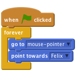
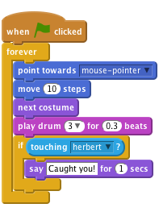
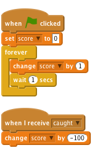

Felix and Herbert
Level 1
We are going to make a game of catch with Felix the cat and Herbert the mouse. You control Herbert with the mouse and try to avoid getting caught by Felix. The longer you avoid him the more points you score, but don’t get caught because your score will go down!

Start a new project.
Click on the stage next to the sprite and switch to the Backdrops tab, and then click the Choose Backdrop from library button and choose the backdrop indoors/hall. Delete the original blank backdrop.
i button to the top left of the Sprite. Change the name of the sprite to Felix.Create this script:
![when FLAG clicked
forever
point towards [mouse-pointer v]
move (10) steps
next costume
play drum (3 v) for (0.3) beats
end](fdeeafd344e1c6ce5654dbc1473fbaf73d4009f7.png)
Click the green flag.
Does Felix follow the mouse pointer? Does it look like he’s walking when he moves? Does he move at the right speed?
Next, we want Felix to chase Herbert the mouse, rather than the mouse pointer.
choose sprite from library button and selecting animals/mouse1.Give Herbert this script:

Click the green flag.
Does Herbert move with the mouse pointer? Does Felix chase Herbert?
We want Felix to know when he’s caught Herbert, and tell us.
Change Felix’s script to be this:

Click the green flag.
Does Felix say when he’s caught Herbert?
Instead of Felix saying something, we want Herbert to turn into a ghost when he’s caught.
Change Felix’s script to send this message when he catches Herbert:
![when FLAG clicked
forever
point towards [mouse-pointer v]
move (10) steps
move (20) steps
next costume
play drum [3 v] for (0.3) beats
if <touching [herbert v]?>
broadcast [caught v]
play drum [17 v] for (0.2) beats
wait (1) secs
end
end](0a0cee2db3835be1984d7b585c2987242094e437.png)
Add a new costume into Herbert by selecting Herbert, going into the Costumes section, and clicking the Choose costume from Library button. Select the fantasy/ghost2-a costume.
Make the costume smaller by clicking on it in the Paint Editor, and dragging the box that appears, to resize it.
Create a new script for Herbert to turn him into a ghost:
![when I receive [caught v]
switch costume to [dead v]
wait (1) secs
switch costume to [alive v]](57d514d13ab4458c22ce5ebe36f6c6baccf2c6e7.png)
Click the green flag.
Does Herbert turn into a ghost when he’s caught?
Does Felix play the right sounds at the right time?
Does Felix still stay still for long enough for Herbert to get away?
Let’s add a score so we know how well we do at keeping Herbert alive.
We’ll start the score at zero and increase it by one every second. If Felix catches Herbert, we’ll reduce the score by one hundred.
Data in the top menu, make a variable and name it score, ensuring that "For all sprites" is selected.On the stage, create these two scripts:

Click the green flag.
Does the score go up by one every second?
Does the score go down by one hundred when Herbert is caught?
What happens when Herbert is caught before score reaches one hundred? Does the score go back to zero when you start a new game?
Well done you’ve finished, now you can enjoy the game!
Don’t forget you can share your game with all your friends and family by clicking on Share on the menu bar!